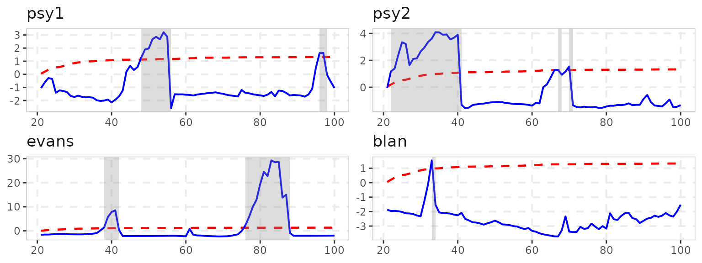
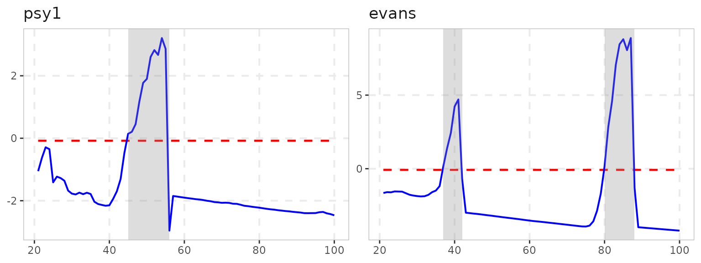
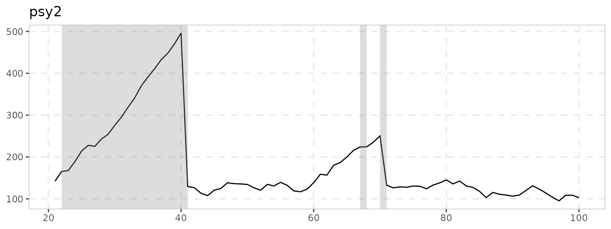
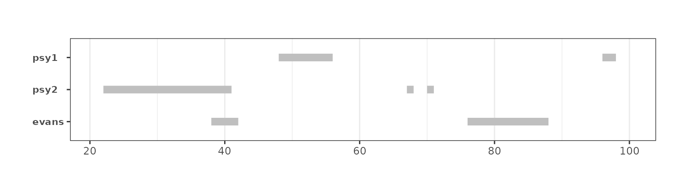
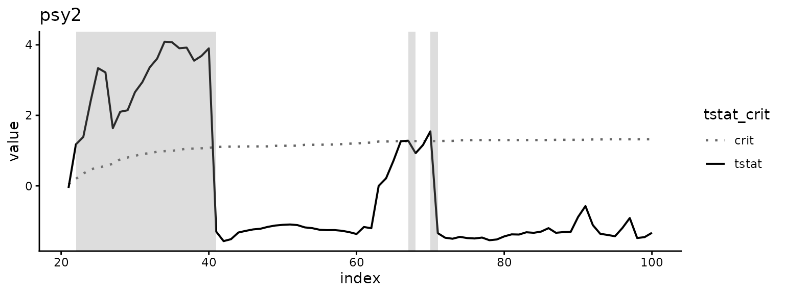
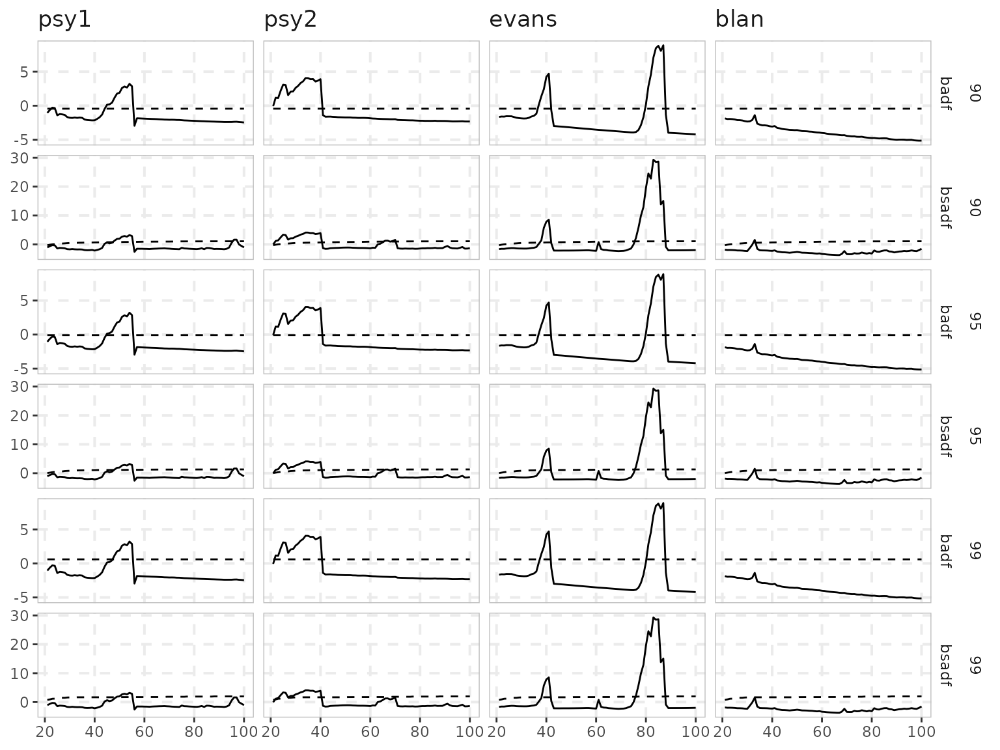
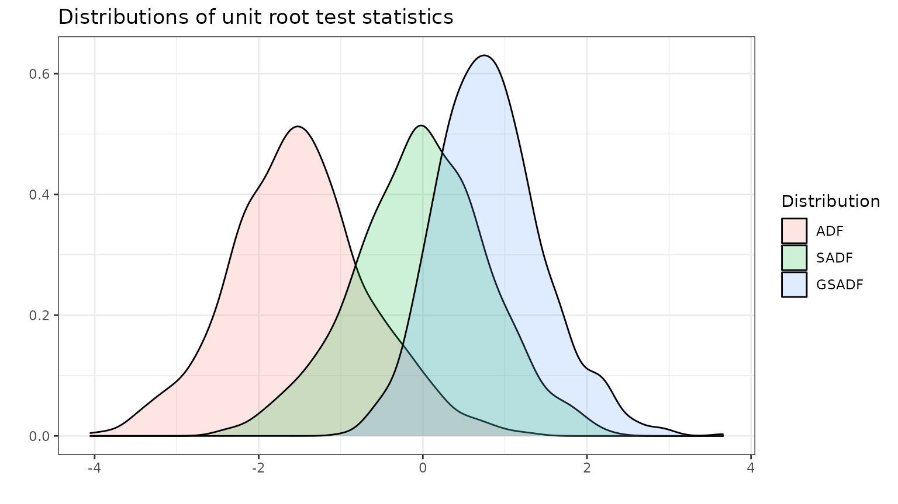

One autoplot() per object
Every result object in the package has an autoplot()
method, so the plotting call is the same whatever you ran –
autoplot(x) – and what it draws depends on what
x is. All of them return a plain ggplot
object, so anything ggplot2 can do (themes, scales, extra layers,
facet_*() arguments) applies on top.
| What you have | What autoplot() draws |
|---|---|
radf() result (radf_obj) |
Test statistic vs. critical-value sequence, one facet per series that rejects the null, with the explosive episodes shaded |
datestamp() result (ds_radf) |
Just the episodes, one horizontal segment per series – the view for many series at once |
radf_*_distr() result (radf_distr) |
The simulated null distribution of the ADF/SADF/GSADF statistics |
Any sim_*() series |
The series itself |
monitor(), monitor_*()
|
Monitored statistic vs. its boundary, with training-end and alarm markers |
dating_*(), radf_recovery()
|
The series with vertical markers at the estimated break dates |
rootstamp() |
Estimated root and its confidence interval per episode |
lbi_test(), quantile_test(),
radf_sbz_union()
|
Statistic vs. critical value per series |
The rest of this vignette is about the first three – the
radf() workflow – and about building your own plot from the
tidied tables when the defaults don’t fit. The other methods take no
options beyond the object and are shown in their own vignettes
(vignette("monitoring"),
vignette("dating-methods"),
vignette("root-inference")).
The radf() plot
Four simulated series, one from each of the package’s classic bubble
DGPs (see vignette("simulation")), estimated with one lag.
With a lag the critical values depend on (n, lag), so we
simulate them once and pass them to every call – the same pattern as
vignette("exuber"):
sims <- data.frame(
psy1 = sim_psy1(100, seed = 1),
psy2 = sim_psy2(100, seed = 2),
evans = sim_evans(100, seed = 3),
blan = sim_blan(100, seed = 4)
)
est <- radf(sims, lag = 1)
cv <- radf_mc_cv(100, lag = 1, seed = 1)
autoplot(est, cv)
Only series that reject the null at 5% are drawn. The options that
change what is plotted are arguments of autoplot()
itself:
# Every series, whether or not it rejects
autoplot(est, cv, nonrejected = TRUE)
# A subset, by name or position; the SADF sequence instead of the BSADF one
autoplot(est, cv, select_series = c("psy1", "evans"), option = "sadf")
The shading of the explosive episodes is a geom_rect()
layer controlled through shade_opt and the
shade() helper; shade_opt = NULL removes
it:

autoplot2() draws the series instead of the
statistic, with the same shading, which is often the more readable view
for a non-technical audience; datestamp()’s own method
reduces each series to its episodes:
autoplot2(est, cv, select_series = "psy2")

Changing the appearance
Everything else – colors, line types, theme – is ggplot2 territory.
autoplot() maps the statistic and the critical value to
color, size and linetype, so the
ggplot2 scale_*_manual() functions override them;
scale_exuber_manual() sets all three at once, and
theme_exuber() is the package’s default theme, exported so
you can apply it to your own plots too:
autoplot(est, cv, select_series = "psy2") +
scale_exuber_manual(color_values = c("grey40", "black"),
linetype_values = c(3, 1)) +
theme_classic()
Arguments autoplot() doesn’t recognise are forwarded to
ggplot2::facet_wrap(), so scales = "free_y",
ncol, labeller, etc. work directly – see
?autoplot.radf_obj for a labeller example that renames the
facets.
Building your own plot
When the default layout isn’t what you need, skip
autoplot() and start from the same table it is built on.
augment_join() joins the full statistic sequences of a
radf_obj with the critical-value sequences of a
radf_cv, one row per observation, series, statistic and
significance level – ggplot2-ready as is:
joined <- augment_join(est, cv)
joined
#> # A tibble: 1,920 × 8
#> key index id data stat tstat sig crit
#> <int> <dbl> <fct> <dbl> <fct> <dbl> <fct> <dbl>
#> 1 21 21 psy1 126. badf -1.05 90 -0.44
#> 2 22 22 psy1 132. badf -0.630 90 -0.44
#> 3 23 23 psy1 137. badf -0.289 90 -0.44
#> 4 24 24 psy1 138. badf -0.350 90 -0.44
#> 5 25 25 psy1 124. badf -1.41 90 -0.44
#> 6 26 26 psy1 129. badf -1.23 90 -0.44
#> 7 27 27 psy1 128. badf -1.28 90 -0.44
#> 8 28 28 psy1 127. badf -1.36 90 -0.44
#> 9 29 29 psy1 117. badf -1.68 90 -0.44
#> 10 30 30 psy1 114. badf -1.77 90 -0.44
#> # ℹ 1,910 more rows
joined %>%
ggplot(aes(x = index)) +
geom_line(aes(y = tstat)) +
geom_line(aes(y = crit), linetype = 2) +
facet_grid(sig + stat ~ id, scales = "free_y") +
theme_exuber()
tidy_join() is the scalar counterpart (one row per
series and statistic, the table summary() prints), and
tidy()/augment() on either object alone give
the un-joined halves – see vignette("naming-and-analysis")
for the full pipeline.
Distributions
The radf_*_distr() twins of the critical-value functions
return the whole simulated null distribution rather than its quantiles,
and have their own autoplot():
distr <- radf_mc_distr(n = 100, nrep = 1000, seed = 1)
autoplot(distr)
As with everything else, tidy() gives the underlying
table, so an empirical CDF or any other summary is a few ggplot2 lines
away:
distr %>%
tidy() %>%
tidyr::pivot_longer(everything(), names_to = "statistic") %>%
ggplot(aes(value, color = statistic)) +
stat_ecdf() +
geom_hline(yintercept = 0.95, linetype = 2) +
labs(title = "Empirical CDF of the null distributions", y = NULL) +
theme_exuber()
Which to reach for
- A quick look at which series are explosive and when:
autoplot(est, cv); addnonrejected = TRUEto see the ones that aren’t. - The series itself with the episodes shaded, for a non-technical
reader:
autoplot2(est, cv). - Many series, only the episodes:
autoplot(datestamp(est, cv)). - Cosmetic changes: keep
autoplot()and add ggplot2 layers, scales or a theme;scale_exuber_manual()for the statistic/critical-value styling. - A different layout altogether:
augment_join(est, cv)and build it yourself.